Ticks, trails & travel – Science and short city break adventures 🧬🧗♀️🌍
🧬 Michał at the International Symposium on Ticks and Tick-borne Diseases 🇩🇪
From March 26–28, 2025, Michał attended the International Symposium on Ticks and Tick-borne Diseases in Weimar, where he presented his poster titled:
🪳 “Ticks and the city: investigating ticks and tick-borne diseases in urban and peri-urban environments”
Michał was there together with Prof. Anna Moniuszko-Malinowska, Head of the Department of Infectious Diseases and Neuroinfection, and a key figure in the field. Great to have strong representation from our MUB team! 👏

He also had the opportunity to do a bit of networking with OneTick consortium members (our MSCA Staff Exchanges proposal is still under evaluation – fingers crossed!) 🧬💬.
🧗♀️ BioGenies’ city break – Montpellier edition 🇫🇷
While Michał was in full science mode, Jarek, Weronika, and Krysia decided to hit pause on lab life and dive into a spontaneous short city break adventure in Montpellier!
🛤️✈️ Train to Wrocław → Flight to Montpellier
The adventure begins!
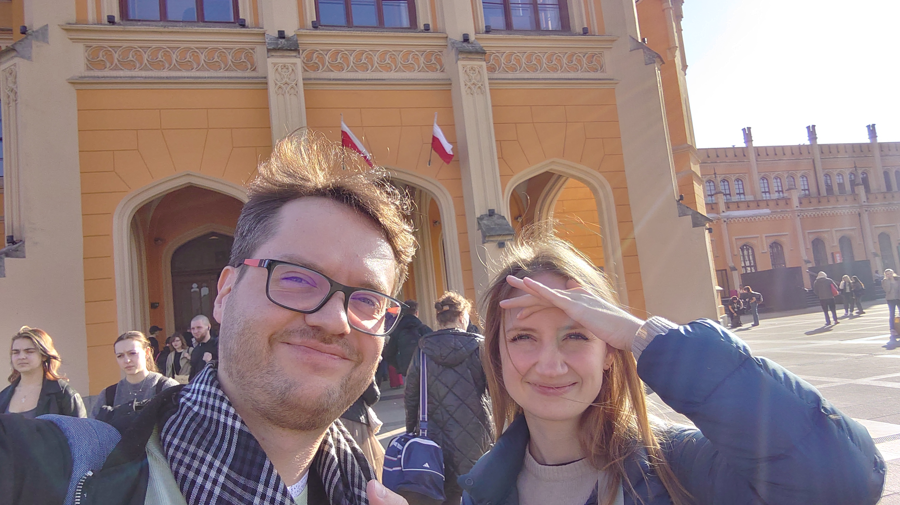
🧗 Day 1 – First via ferrata
Sunny skies but cold wind in the shadows made the climb extra challenging.
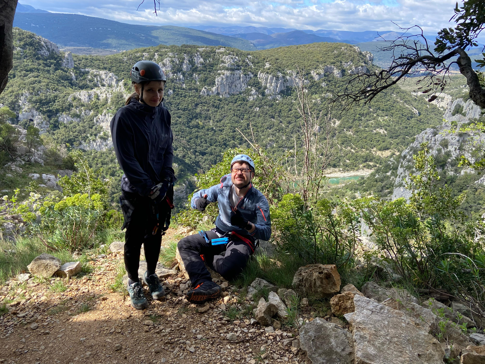 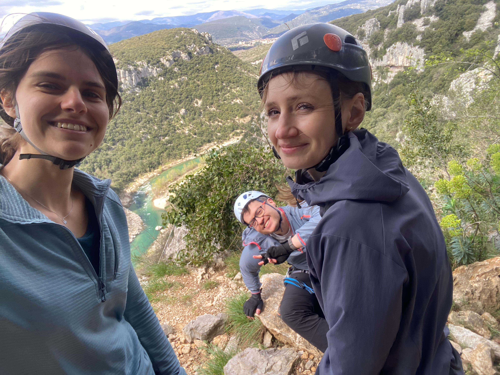 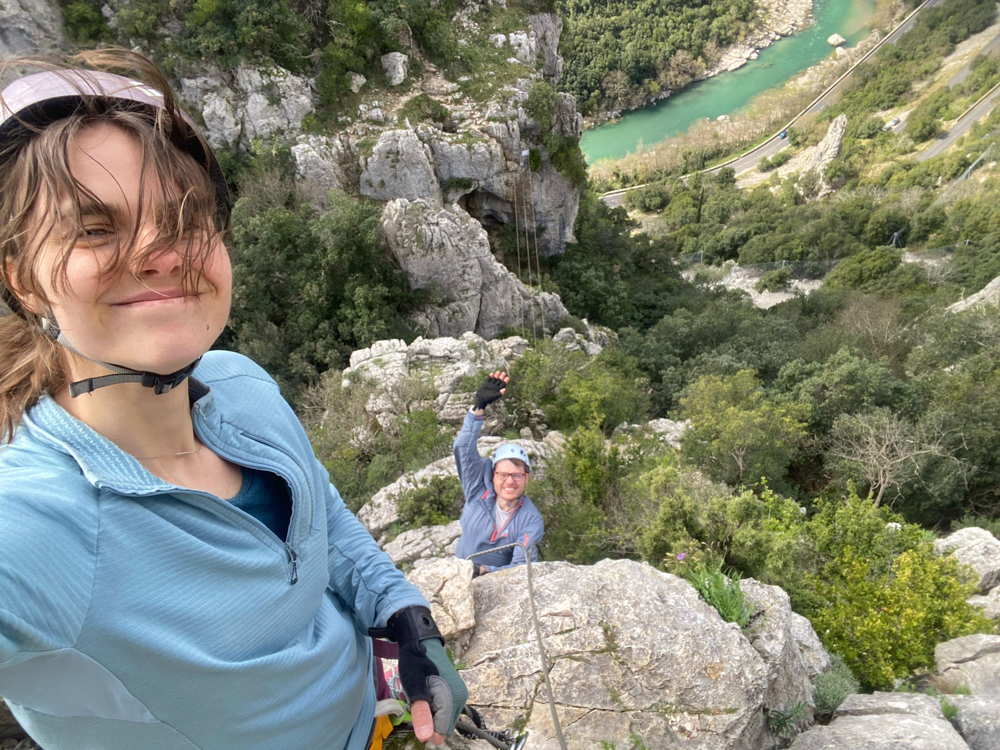 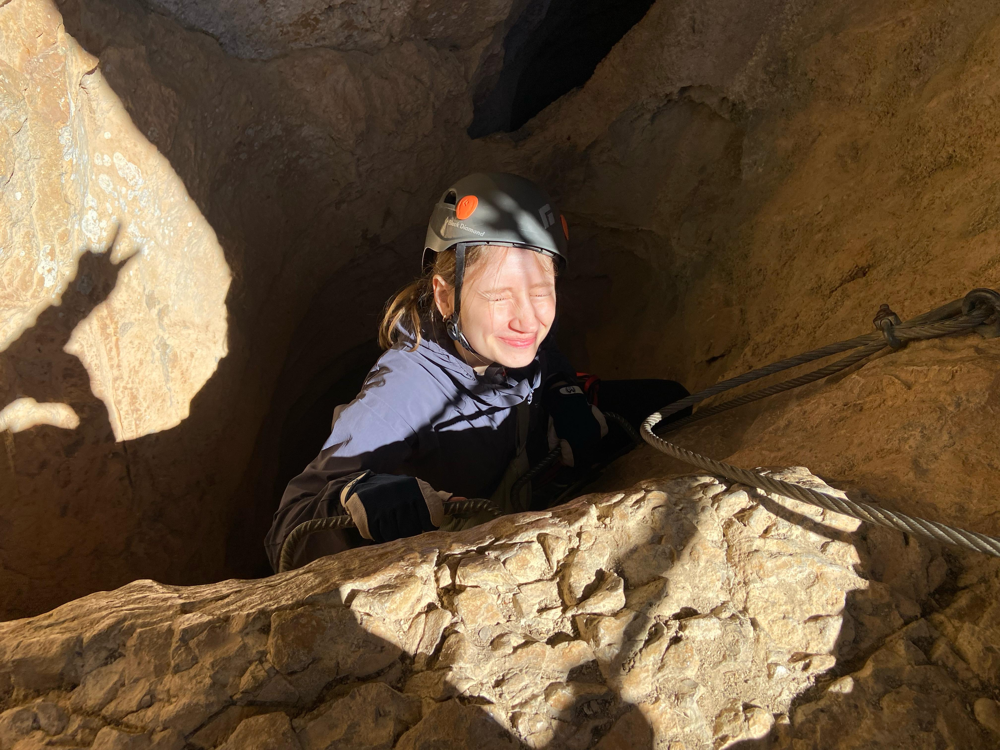
🏛️ Quick sightseeing in Montpellier
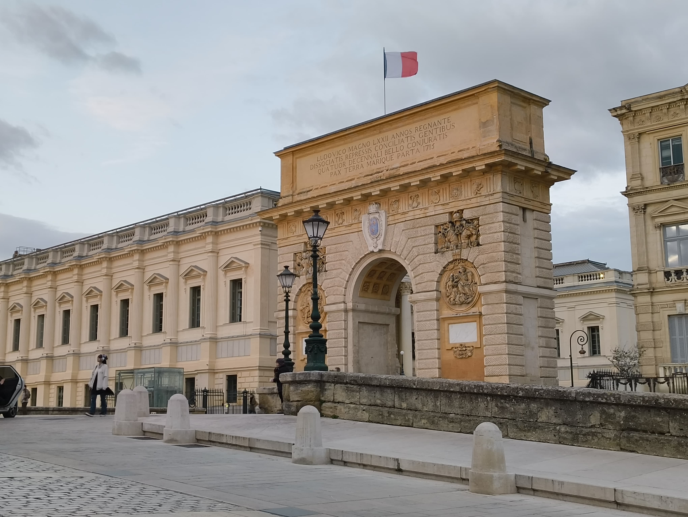
The aqueducts were closed, but Jarek tried going around the fence anyway 🙈
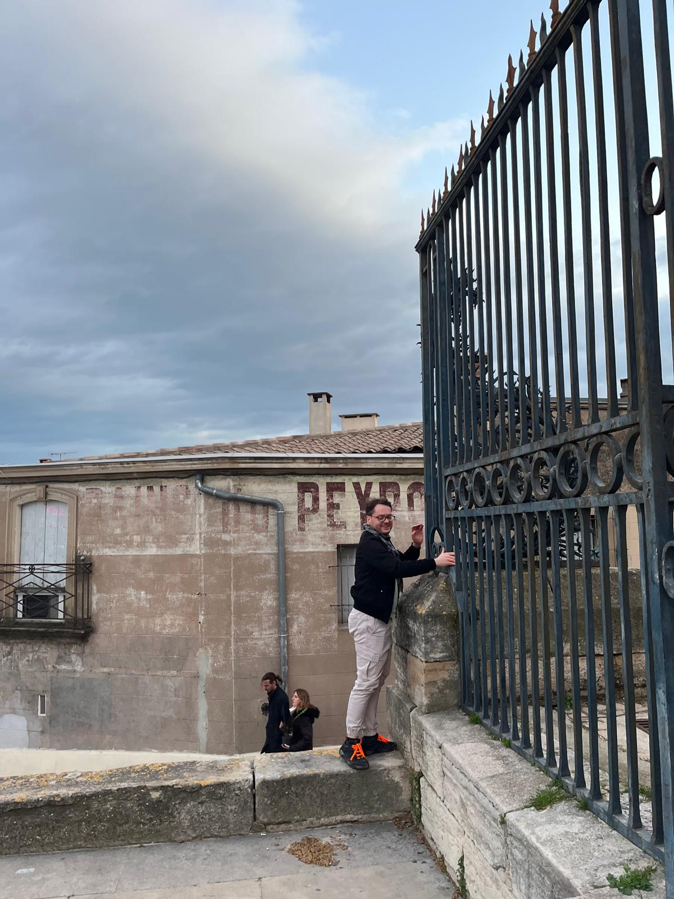
🧗♂️ Day 2 – River via ferrata & zipline
Second via ferrata directly above the river, with a super fun zipline ride!
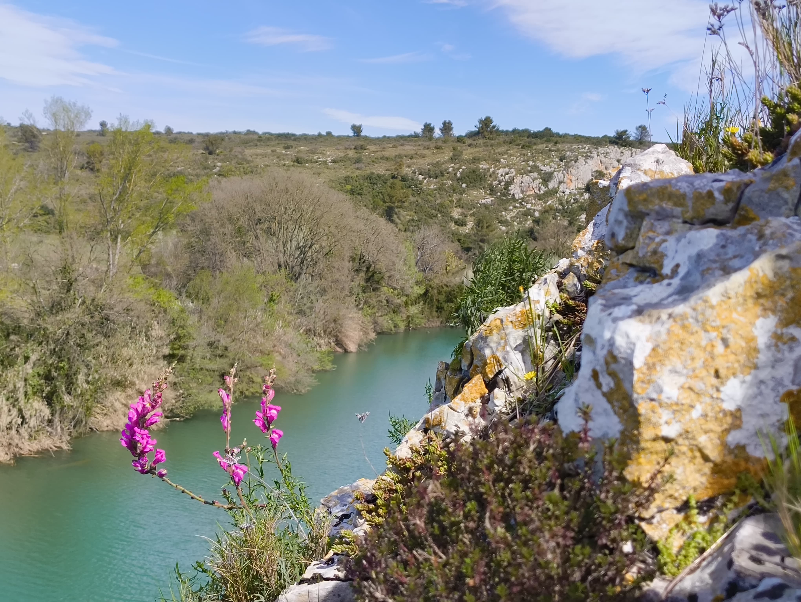 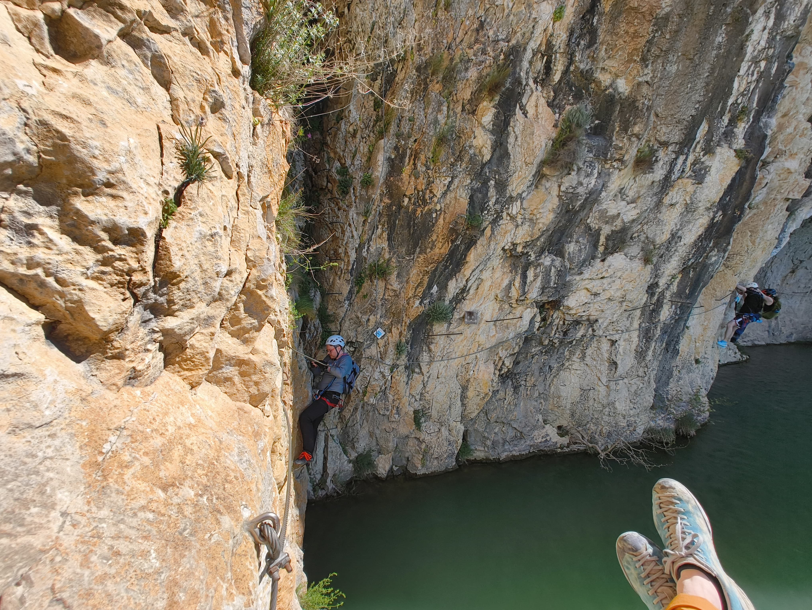
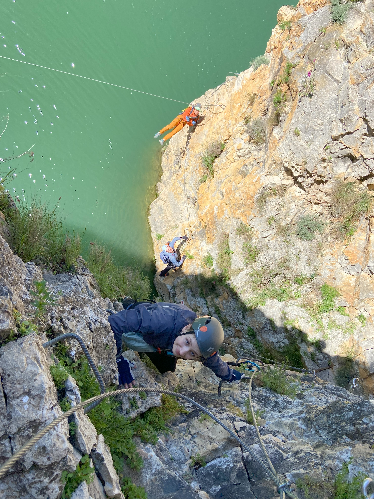
🕳️ Cave exploration near Pic Saint-Loup
Before heading to the beach, we visited a cool cave near Pic Saint-Loup, mysterious and refreshing!
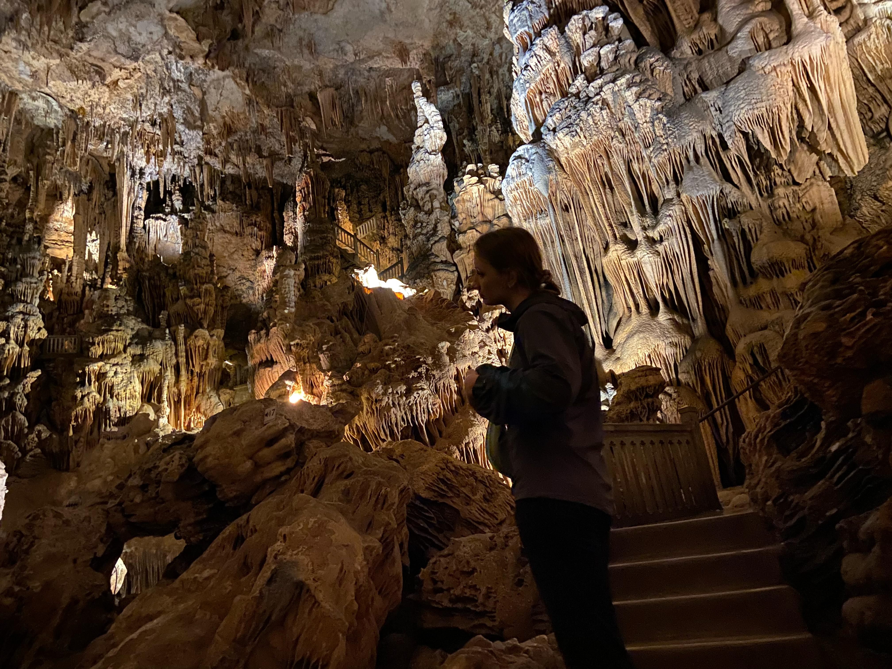
🌊 Afternoon at the beach
Collected seashells and saw beautiful flamingos 🦩
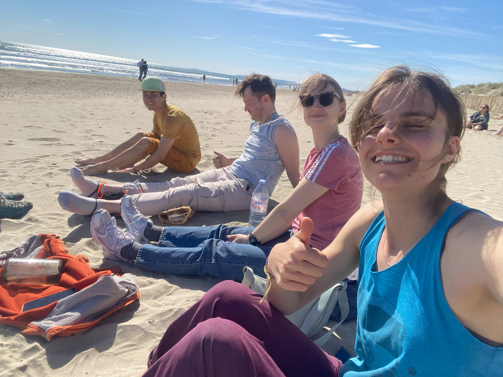
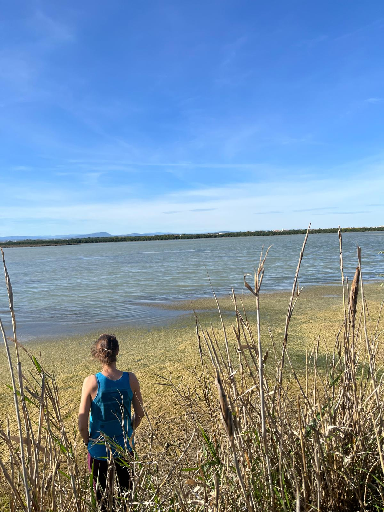
🇵🇱 Return to Poland
Landed in Cracow, where we were greeted by Pope John Paul II 🧳🇵🇱
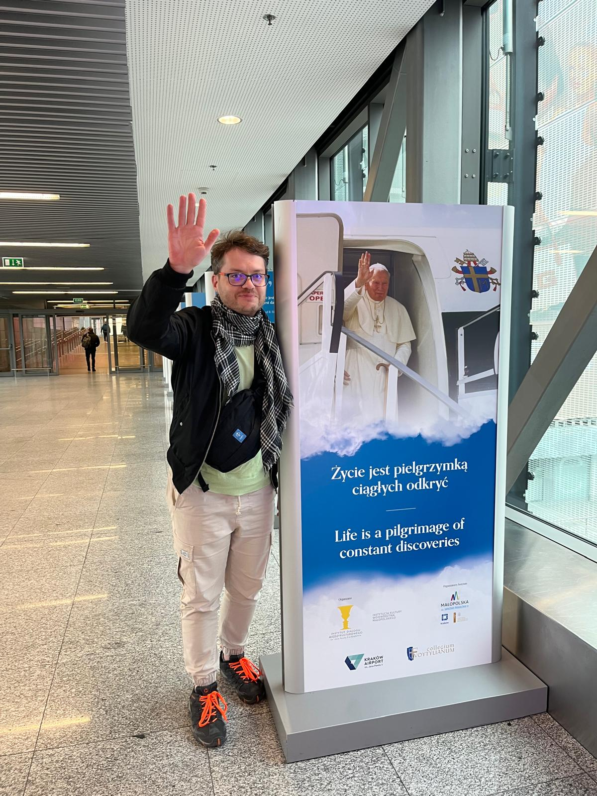 Sometimes you need a dose of nature and adventure to recharge, and that’s exactly what they did! 💙
This spontaneous journey was the perfect mix of adventure, fun, and relaxation, and a great reminder that BioGenies know how to balance science and life 💙.